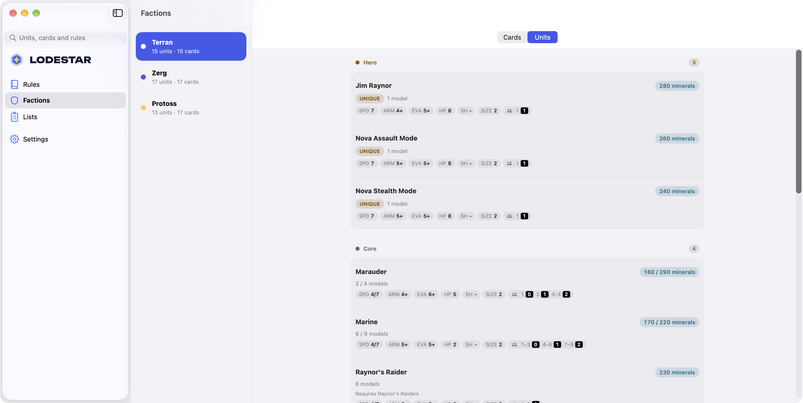

01 / BUILD
Build your army.
Add units and cards. See your minerals, gas, and slots as you build.


BUILT FOR GAME NIGHT
Build your list. Find the rules.
Get back to the game.
Lodestar is an army builder and rules companion for StarCraft: The Miniatures Game.
iPhone · iPad · Mac · Android phones & tablets
EARLY ACCESS
Help shape the app. Choose your device to join the beta.
Join the Google Play test, then install the app.
Join on Google PlayOr scan to open the Google Play app listing.

Join the beta through TestFlight.
Join on TestFlightOr scan to join through TestFlight.

Leave your email and we’ll contact you about testing.
Your email is sent to Google Forms for testing invitations.
Email signup is unavailable right now.
Talk lists and tactics, share feedback on the beta, and hear about updates first.
PICK YOUR FACTION
WHAT YOU CAN DO
Everything you need for your next game.
Add units and cards. See your minerals, gas, and slots as you build.
Look up unit stats, abilities, upgrades, and rules when you need them.

Check supply, rounds, and scoring before you play.

Use deployment maps to find entry edges, markers, and distances.

Screenshots from a development build.
PICK YOUR SCREEN
Use Lodestar on your phone, tablet, or Mac.

Your list on the go.

Your roster on a bigger screen.

See the whole map.

Explore your factions on Mac.

Find the rules on the outer screen.

More room to browse when opened.
Screenshots from development builds.